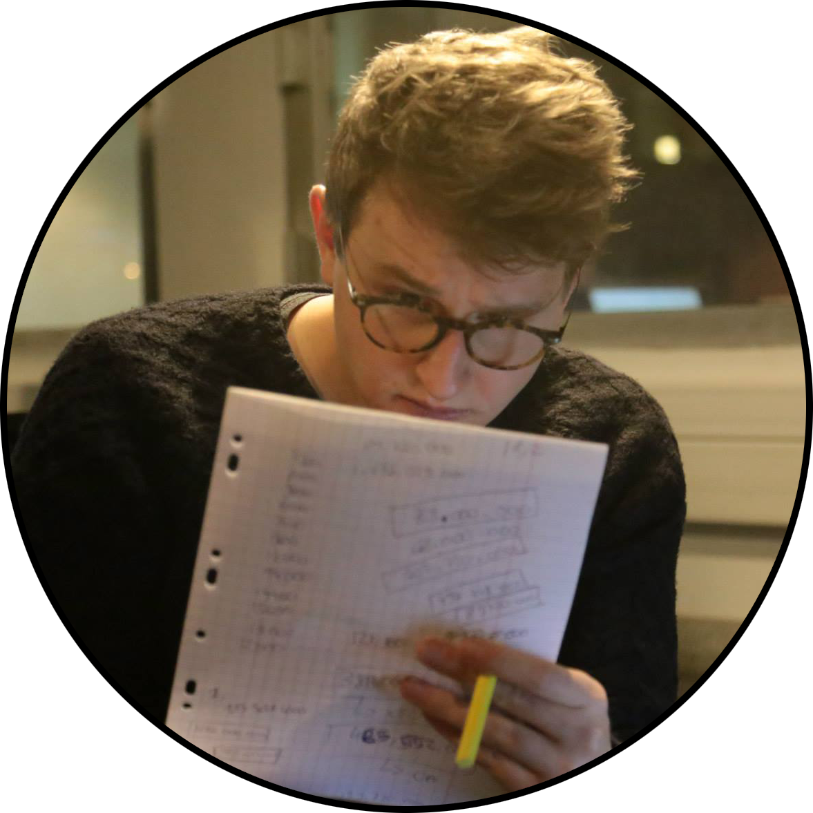

Je me nomme Max Allouch, je suis un apprenti Webdesigner de 18 ans. Vous trouverez sur mon portfolio, des informations sur mon projet professionnel et ma personnalité ainsi que des moyens de me contacter. "Je veux dès aujourd'hui faire de ma passion mon métier !" Je suis actuellement en H1 à HETIC, une École d’Internet, afin d’affiner mes compétences informatiques que j’ai cultivées en autodidacte depuis mon adolescence. C’est donc une occasion de multiplier mes travaux de création de sites web, et de travailler en équipe avec des personnes qui possèdent une certaine culture web, afin de réaliser des projets ambitieux et difficiles. Je suis donc motivé pour apprendre, avec une grande soif de savoir.
